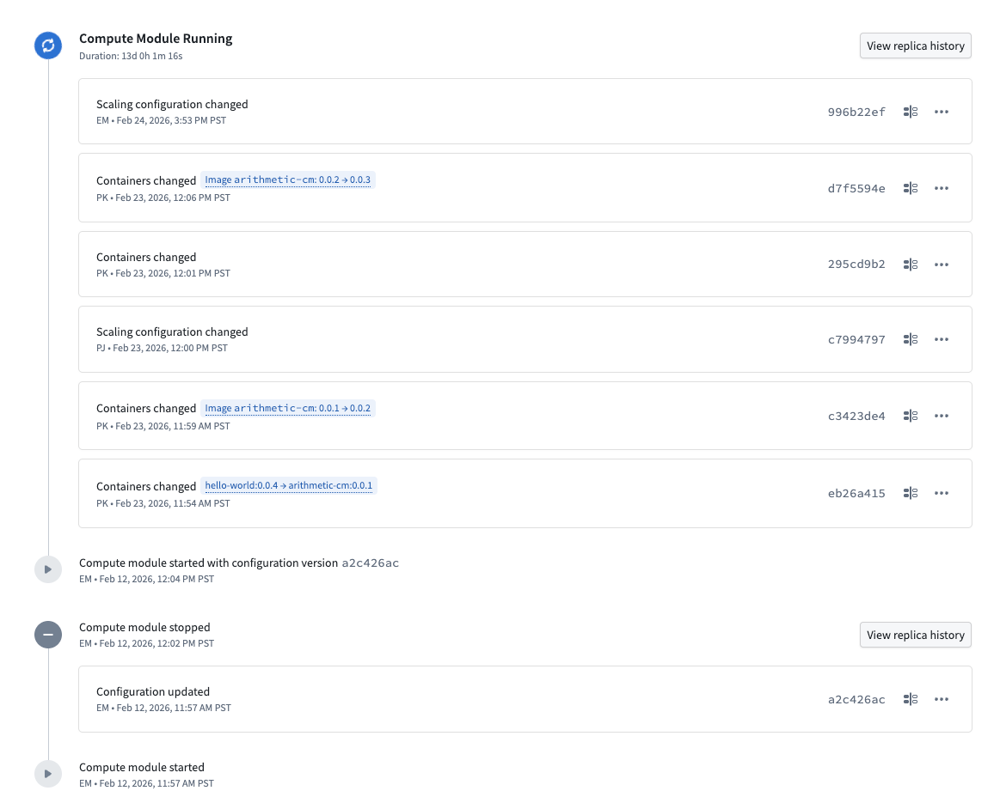
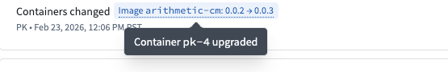
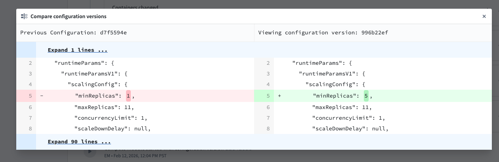
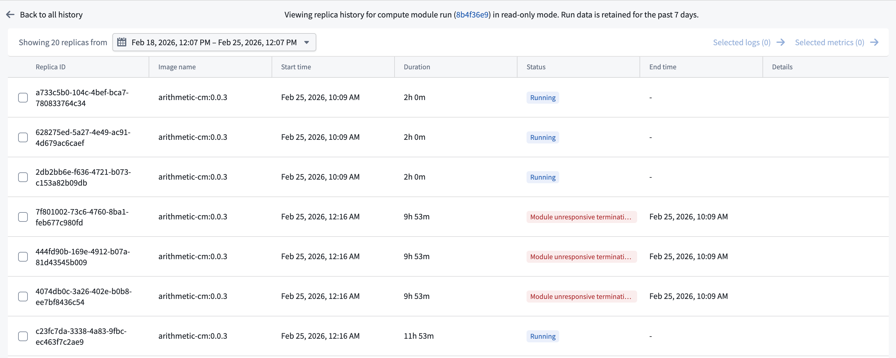
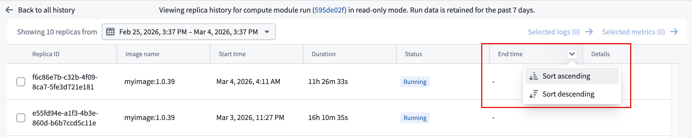
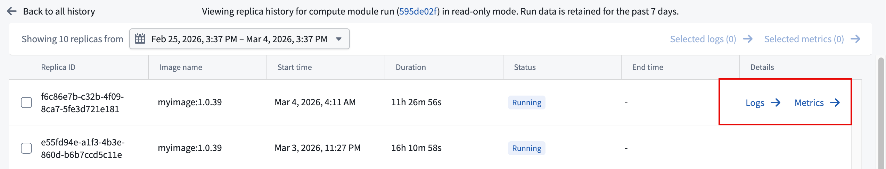

The History tab provides a chronological record of all changes and runs for your compute module, which is useful for debugging. Use this view to understand how your compute module's configuration has evolved over time and to investigate past deployments.

The history tab displays events in reverse chronological order, including the following:
Configuration changes: Each change is labeled with the type of modification, such as Containers changed or Scaling configuration changed. When container images are updated, the history shows the specific version transition (for example, image arithmetic-cm: 0.0.1 â 0.0.2). Hovering over this tag will display the impacted container.

To view the full specification for a configuration version, select the tag containing the version identifier.

For any given compute module run, you can view the replica history by selecting View replica history next to a stopped run or an in-progress run. The replica history provides a detailed view of all replicas created during that run.

The banner at the top of the replica history page displays the run identifier as a link. Select this link to open the run in Job Tracker, where you can view additional information about the compute module run.
The replica history table displays the following information for each replica:

To view logs or metrics for an individual replica, hover over its row to reveal the Logs and Metrics buttons in the Details column, then select the desired option.

To view logs or metrics for multiple replicas at once, select the replicas using the checkboxes and then use the Selected logs or Selected metrics links at the top of the table.
:::callout{theme="neutral"} Replica history is read-only. Replica details are only retained for 7 days. :::